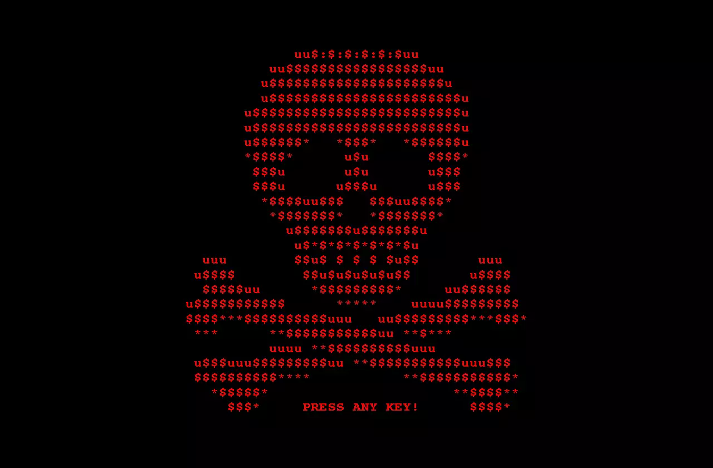

Denna artikel tittar på Ransomware - attacker och åtgärder.
Ransomware
Ransomware-attacker ökade 57X mellan 2015 - 2021 och enligt estimeringar tyder allt på att det kommer fortsätta öka och 2031 beräknas en ny infektion ske var 2 sekunder till en kostnad av $265 miljarder årligen. Detta i sin tur får försäkringsbolagen att dra öronen åt sig och ställa krav på att drabbade företag efter en attack ska kunna peka på att tillräckliga säkerhetsåtgärder trots allt har tillämpats samt att personalen blivit tillräckligt utbildad.
Enligt Verizons Data Breach Investigations Report (DBIR) är detta dock lågt räknat och pekar på att ransomware-attacker ökat 13% mellan 2020 - 2021, en större ökning än de senaste 5 åren tillsammans.
Infektionsmekanismen pekas ut att vara den mänskliga faktorn i 82% av fallen, där social engineering svarar för 25%. Utöver det kan vi nog skylla på okunskap, slarv och en känsla av att individens agerande inte spelar nån roll.
Just MITT lösenord spelar väl ingen roll?
Återigen, du är den svagaste länken (nej, kanske inte just DU, men alla andra). I och med att ransomware drabbar samhällskritiska funktioner såsom sjukhus, dricksvattenförsörjning, energi etc., och det i princip bara krävs en (1) ingång i systemet för att smittas är JUST DU en del av ett lands defensiva infrastruktur. Justera därefter - säkra dina system.
Krypterande ransomware, eller cryptoware är vanligast förekommande. Variationer existerar, såsom:
- Icke-krypterande ransomware som låser skärmen och nekar dig tillträde till dina filer, men de krypteras ej.
- Kryptering av Master Boot Record (MBR) eller NTFS.
- Leakware/extortionware
- Ransomware för mobiltelefon - infekterar genom drive-by downloads eller fakeade appar.
ATTACKEN
-
INFEKTION:
Oavsett metod (attackyta) behöver RW:t bara installera sig på en (1) nätverksenhet för att få tillgång till hela systemet. -
SECURE KEY EXCHANGE:
Signal skickas till hotaktörens C2-server (Command & Control) för att generera de kryptografiska nycklarna som låser systemet. -
KRYPTERING:
Programmet börjar nu kryptera alla filer den kan hitta - lokalt eller på nätverket. -
UTPRESSNING:
När programmet fått säker kontroll över filerna visas ett meddelande om nästa steg; lösensumma, hur den ska betalas och konsekvenserna vid utebliven betalning. -
AVKRYPTERING/ÅTERSTÄLLNING
INITIALA ÅTGÄRDER
Vid infektion är det initialt tre åtgärder som bör utföras.
-
BRYT KONTAKT:
Bryt omedelart kontakten till nätverk och delade enheter för att förhindra spridning. -
FOTA:
Ta ett foto av skärmen med ransomware-meddelandet samt screenshot om möjligt. Kan vara till hjälp vid identifiering av specifikt malware samt bifogas polisanmälan. -
IDENTIFIERA:
Identifiera aktuellt Ransomware - det finns många olika varianter som kräver olika respons. En sökterm att utforska är “ranwomware decryption tools”, för det KAN vara så att det går att återfå filerna. nomoreransom.org
ℹ️ FÖRSÖK AVKRYPTERA
DÄREFTER
-
Överge filerna?
Blås ut datorn fullständigt och ominstallera ditt OS -
Betala lösensumman?
OM du väljer att betala, var beredd på att ändå inte få tillbaka tillgången till dina filer. De stora hotaktörerna brukar leva upp till sitt löfte, men som sagt, inga garantier.
⚠️ BETALD LÖSENSUMMA ≠ UPPLÅSTA FILER
PRUTA
Unit 42 rapporterar att snittet för betalning hamnar på ~42% av ursprungskravet, alltså är det en god idé att pruta.
ℹ️ EFTERSOM DU GIVETVIS HAR BACKUP PÅ ALLA DINA VIKTIGA FILER PÅ MINST EN (1) ANNAN PLATS ÄR VALET ENKELT - ÖVERGE FILERNA, RADERA ALLT.
Du en del av ditt lands defensiva infrastruktur. Justera därefter - säkra dina system.